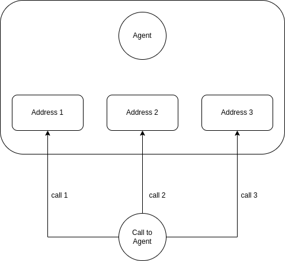

Overview¶
Note
AI Context
Complexity: Medium
Cost: Free (agent management operations incur no charges; calls routed to agents are billed per call minute)
Async: No. Agent CRUD operations are synchronous. However, agent status changes due to incoming calls (e.g.,
availabletoringingtobusy) happen asynchronously via the queue routing system.
The agent, also known as the call center agent or phone agent, plays a crucial role as a representative of a company, handling calls with private or business customers on behalf of the organization. Typically, agents work in a call center environment, where multiple agents are employed to efficiently manage incoming and outgoing calls. The call center may be operated by the company itself or outsourced to an external service provider. In the case of external service providers, a single site may serve various clients from different businesses.
In VoIPBIN, agents are the people (or endpoints) that receive calls from queues. They have statuses, skills (tags), and contact addresses that determine when and how they can receive calls.
Agent Status¶
Every agent has a status that reflects their current availability. The status determines whether an agent can receive calls from queues.
Status Overview
+-----------------------------------------------------------------------------+
| Agent Status States |
+-----------------------------------------------------------------------------+
+-------------------------------------------+
| User Actions |
| (Agent manually changes their status) |
+---------------------+---------------------+
|
+---------------------------+---------------------------+
| | |
v v v
+-----------+ +-----------+ +-----------+
| available | | away | | offline |
| (ready) | | (break) | |(logged out)|
+-----+-----+ +-----------+ +-----------+
|
| Call routed to agent
v
+-----------+
| ringing |
| (incoming)|
+-----+-----+
|
| Agent answers
v
+-----------+
| busy |
| (on call) |
+-----+-----+
|
| Call ends
v
(returns to previous status)
Status Descriptions
Status |
What it means |
Can receive queue calls? |
|---|---|---|
available |
Agent is logged in and ready to take calls |
Yes |
away |
Agent is temporarily unavailable (break, meeting, etc.) |
No |
busy |
Agent is currently handling a call |
No |
offline |
Agent is logged out of the system |
No |
ringing |
System is attempting to deliver a call to the agent |
No |
Status Transitions
Manual transitions (agent controls):
+-----------+ <--------------------------------> +-----------+
| available | User changes status | away |
+-----------+ <--------------------------------> +-----------+
^ ^
| User logs in/out |
v v
+-----------+ <--------------------------------> +-----------+
| offline | | offline |
+-----------+ +-----------+
Automatic transitions (system controls):
+-----------+ Call routed +-----------+
| available |--------------------------->| ringing |
+-----------+ +-----+-----+
^ |
| Call ends | Agent answers
| (or timeout) v
| +-----------+
+----------------------------------| busy |
+-----------+
Contact Addresses¶
Each agent can have multiple contact addresses - these are the endpoints where calls are delivered when the agent is selected.
Address Types
+-----------------------------------------------------------------------------+
| Agent Contact Addresses |
+-----------------------------------------------------------------------------+
Agent: John Smith
+-----------------------------------------------------------------------------+
| Addresses: |
| |
| 1. Extension: 1001 |
| -> Rings desk phone registered to extension 1001 |
| |
| 2. Tel: +14155551234 |
| -> Rings mobile phone at this number |
| |
| 3. SIP: john@company.com |
| -> Rings SIP softphone client |
| |
+-----------------------------------------------------------------------------+
Type |
Description |
|---|---|
extension |
Internal extension number (must be registered with VoIPBIN) |
tel |
External phone number in E.164 format (+15551234567) |
sip |
Direct SIP address (user@domain) |
Note
AI Implementation Hint
When setting agent addresses of type tel, the number must be in E.164 format: start with +, followed by country code and number, no dashes or spaces (e.g., +15551234567). For extension type, use only numeric characters without special characters.
Address Uniqueness
Each address can only belong to one agent per customer:
✓ Agent A has extension 1001 in Customer X
✓ Agent B has extension 1001 in Customer Y (different customer, OK)
✗ Agent B has extension 1001 in Customer X (same customer, CONFLICT)
Call to agent¶
To reach an agent, VoIPBIN employs a system that allows the agent to have multiple addresses. When a call is initiated to agents, VoIPBIN generates calls to every agent’s address simultaneously. If an agent answers one of the calls, VoIPBIN automatically terminates the other calls, streamlining the communication process and ensuring that only one connection is established with the available agent.
Simultaneous Ring
+-----------------------------------------------------------------------------+
| Agent with Multiple Addresses |
+-----------------------------------------------------------------------------+
Queue finds Agent Smith (available)
|
v
+------------------------------+
| Ring ALL addresses at once |
+------------------------------+
|
+---------+---------+
v v v
+---------+ +---------+ +---------+
| Ext 1001| | Mobile | | SIP App |
| RING! | | RING! | | RING! |
+----+----+ +----+----+ +----+----+
| | |
| | | Agent answers on mobile!
| | v
| | +-----------+
| | | CONNECTED |
| | +-----------+
| |
v v
+---------+ +---------+
| CANCEL | | CANCEL | <- Other calls automatically cancelled
+---------+ +---------+

This approach enables efficient call handling, minimizing the time customers spend waiting for an available agent. The call distribution mechanism ensures that agents are optimally utilized, enhancing customer service and overall call center productivity.
Agent Lifecycle¶
Understanding the agent lifecycle helps you manage your call center effectively.
Creating an Agent
+-----------------------------------------------------------------------------+
| Agent Creation |
+-----------------------------------------------------------------------------+
POST https://api.voipbin.net/v1.0/agents
+---------------------------------------+
| { |
| "username": "john@company.com", |
| "password": "secure_password", |
| "name": "John Smith", |
| "tag_ids": [...], |
| "addresses": [...] |
| } |
+---------------------------------------+
|
v
+---------------------------------------+
| Agent Created |
| o Status: offline (default) |
| o Permission: user (default) |
| o Ready to be configured |
+---------------------------------------+
Agent Login Flow
+-----------------------------------------------------------------------------+
| Agent Login |
+-----------------------------------------------------------------------------+
1. Agent calls login API
POST https://api.voipbin.net/v1.0/login
{ "username": "...", "password": "..." }
|
v
2. System validates credentials
+----------------+
| Check password |
| hash in DB |
+----------------+
|
v
3. Return agent info
+------------------------------------+
| { |
| "id": "agent-uuid", |
| "name": "John Smith", |
| "status": "offline", |
| "permission": "user", |
| ... |
| } |
+------------------------------------+
|
v
4. Agent sets status to "available"
PUT https://api.voipbin.net/v1.0/agents/{id}/status
{ "status": "available" }
|
v
5. Agent is now ready to receive calls!
Guest Agent
Every customer account automatically has a guest agent created:
+-----------------------------------------------------------------------------+
| Guest Agent |
+-----------------------------------------------------------------------------+
o Created automatically when customer account is created
o Has admin permissions
o Cannot be deleted
o Cannot have password changed
o Ensures account always has at least one admin
How Agents Receive Queue Calls¶
The complete flow of how a call is routed from a queue to an agent:
+-----------------------------------------------------------------------------+
| Queue to Agent Call Flow |
+-----------------------------------------------------------------------------+
Step 1: Call waiting in queue
+----------------------+
| Queuecall: waiting |
| Queue: Support |
| Required tags: |
| o english |
| o billing |
+----------+-----------+
|
v
Step 2: Queue searches for agents
+----------------------------------------------------------------------+
| SELECT agents WHERE: |
| o customer_id = queue's customer_id |
| o status = 'available' |
| o has ALL required tags (english AND billing) |
+----------------------------------------------------------------------+
|
v
Step 3: Select one agent (random)
+----------------------------------------------------------------------+
| Found: Agent A, Agent C, Agent E |
| Selected: Agent C (random) |
+----------------------------------------------------------------------+
|
v
Step 4: Route call to agent
+----------------------+
| Agent C status: |
| available -> ringing |
+----------+-----------+
|
| Agent's phones ring
v
Step 5: Agent answers
+----------------------+
| Agent C status: |
| ringing -> busy |
| |
| Queuecall status: |
| waiting -> service |
+----------------------+
Status Events and Webhooks¶
Agent status changes trigger events that you can subscribe to:
+-----------------------------------------------------------------------------+
| Agent Status Events |
+-----------------------------------------------------------------------------+
Agent changes status
|
v
+----------------------+
| agent_status_updated |
| event generated |
+----------+-----------+
|
+-----------------------------------------+
| |
v v
+----------------------+ +----------------------+
| Webhook notification | | Internal event |
| to your endpoint | | (other services) |
+----------------------+ +----------------------+
Example Webhook Payload
{
"event_type": "agent_status_updated",
"data": {
"id": "agent-uuid",
"name": "John Smith",
"status": "available",
"previous_status": "offline",
"tm_update": "2024-01-15T10:30:00Z"
}
}
Permission¶
In the VoIPBIN ecosystem, permissions play a crucial role in governing the actions that can be performed by the system’s agents. Each API within VoIPBIN is subject to specific permission limitations, ensuring a secure and controlled environment.
Permission Levels
+-----------------------------------------------------------------------------+
| Permission Hierarchy |
+-----------------------------------------------------------------------------+
+-----------------------------------------------------------------------------+
| ADMIN |
| o Full access to all APIs |
| o Can manage other agents |
| o Can view billing and account settings |
| o Can create/delete resources |
+-----------------------------------------------------------------------------+
|
| More restricted
v
+-----------------------------------------------------------------------------+
| USER |
| o Can view and use assigned resources |
| o Can update own status |
| o Cannot manage other agents |
| o Limited administrative access |
+-----------------------------------------------------------------------------+
VoIPBIN employs a robust permission framework to regulate access to its APIs, enhancing security and preventing unauthorized actions. Agents, representing entities interacting with the system, are assigned permissions that align with their intended functionalities.
Every API in VoIPBIN is associated with granular permission limitations. These limitations are designed to:
Restrict Access: Ensure that only authorized agents can invoke specific APIs.
For clarity, consider an example where an agent is granted permission to access the “activeflows” API but is restricted from invoking certain actions within it. This granular control ensures that agents operate within defined boundaries.
Best Practices¶
1. Set Up Appropriate Tags
Good tag design:
+-----------------------------------------+
| o Use consistent naming |
| o Group by category (skill_, lang_) |
| o Keep tags meaningful and specific |
| o Document what each tag means |
+-----------------------------------------+
2. Configure Multiple Addresses
For reliability:
+-----------------------------------------+
| Agent Smith: |
| o Primary: Extension 1001 (desk) |
| o Backup: +15551234567 (mobile) |
| |
| -> If desk phone is busy/down, |
| mobile still rings |
+-----------------------------------------+
3. Monitor Agent Status
Subscribe to status webhooks to track agent availability
Build dashboards showing real-time agent status
Set up alerts for agents stuck in unusual states
4. Handle Status Transitions Properly
Common flow:
1. Agent logs in → Status: offline
2. Agent sets available → Status: available
3. Call comes in → Status: ringing (automatic)
4. Agent answers → Status: busy (automatic)
5. Call ends → Status: available (if was available before)
6. Agent takes break → Status: away (manual)
7. Agent logs out → Status: offline (manual)
Common Scenarios¶
Scenario 1: Agent Day Start
08:55 - Agent logs in
Status: offline
09:00 - Agent sets available
Status: available
→ Now eligible for queue calls
Scenario 2: Taking a Break
Agent is available, receives call
Status: available → ringing → busy
Call ends
Status: busy → available
Agent takes lunch break
Status: available → away
→ Not eligible for calls
Agent returns
Status: away → available
→ Eligible again
Scenario 3: End of Day
Agent finishes last call
Status: busy → available
Agent logs out for the day
Status: available → offline
→ Not eligible for calls
Troubleshooting¶
Status Issues
Symptom |
Solution |
|---|---|
Agent not receiving calls |
Check status is “available”; verify agent has required tags for queue; check addresses |
Stuck in “ringing” status |
Check if call was properly terminated; may need to manually reset status |
Status changes not triggering webhooks |
Verify webhook endpoint is configured; check webhook URL is accessible |
Address Issues
Symptom |
Solution |
|---|---|
Address conflict error |
Each address can only belong to one agent per customer; remove from other agent first |
Calls not reaching agent |
Verify address format (E.164 for tel); check extension is registered |
Some addresses not ringing |
Verify all addresses are valid and reachable; check network connectivity |
Tag Issues
Symptom |
Solution |
|---|---|
Agent not matched to queue |
Verify agent has ALL required tags for queue; tags must match exactly |
Tag assignment failed |
Verify tag IDs exist; check API permissions |